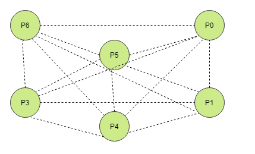

Bully 算法原理
一、什么是Bully 选主 算法
Bully算法是一种霸道的集群选主算法，选举原则是“长者”为大，即在所有活着的节点中，选取ID最大的节点为主节点。
（1）节点角色
分为两种：普通节点和主节点。
初始化时，所有节点都是平等的，都是普通节点，都有成为主节点的权利。当选主成功后，有且仅有一个节点成为主节点，其他节点都是普通节点。
（2）选举过程中，发送的消息种类：
- Election消息，用于发起选举，例如p1->p2发送选举消息，表示p1支持选举p2当Leader
- Alive消息，对Election消息的应答
- Victory消息，选举成功的主节点向其他节点发送的宣誓主权的消息。
（3）前提条件
集群中的每个节点均知道其他节点的ID
（4）选举条件
- 集群初始化
- 主节点故障或与其他节点失去联系
- 任意一个比当前主节点 ID 大的新节点加入集群
- 某个节点从故障中恢复
（5）选举基本过程
- 初始化时，网络环境正常，节点也无故障的情况下，集群中的每个节点都会判断自己的ID是否是当前活着的所有节点ID的最大的，如果是，则直接向其他节点发送Victory消息，宣誓自己为Leader
- 当主节点发生故障或其他原因导致重新选主时，如果当前节点发现自己的ID不是当前活着的节点中ID最大的，则向比自己ID大的所有节点发送Election消息，并等待回复Alive消息。
- 在给定的时间范围内，本节点如果没有收到其他节点回复的Alive消息，则认为自己成为Leader，并且向其他节点发送Victory消息。 如果接受到比自己ID大的节点的Alive消息，则人家比你大，老老实实的等待Victory消息吧。
二、Bully算法 选主 过程
Step0:有六个节点组成的集群，它们相互直接连接，P6是leader,因为它的ID最大（ID=6 ）

Step1:在某个时间点，Leader节点P6故障宕机了

Step2:P3节点是整个集群中最先发现Leader节点宕机的节点，于是它发起了选举，通知比自己ID大的节点

Step3:因为P6已经由于故障无法响应，只有P4和P5节点向P3节点发出响应，P3收到响应后便会等待最终的Victory消息

Step4:P4节点向P5节点和P6节点发送选举消息

Step5:因为P6节点故障无法响应，只有P5节点做出了响应

Step6:P4节点收到响应后便会等待最终的Victory消息，于是P5节点只向P6节点发起了选举消息

Step7：由于P6节点发生故障无法响应，于是P5就成了整个集群的Leader节点，并向其他节点发起宣誓主权的消息

三、Bully算法的缺陷
- 主节点假死
主节点在负载过重的情况下，无法及时的向其他节点做出响应 。
比如，上图中的P6节点假死，于是P5节点成为了主节点，但是在P6节点负载减轻之后，P6节点又对组内其他节点作出了响应，P6节点又会成为主节点，如此反复，整个集群状态就会非常不可靠。
一种解决方式是：当主节点负载过重，无法及时对其他节点做出响应的时候，如果有1/2以上节点都认定主节点存活，那么其他节点就会放弃发起选举。
例如上图中，主节点P6因为负载重，来不及对P3节点作出响应，所以P3节点通知P4,P5节点进行选举。
但是，如果P3节点发现主节点P6对自己长时间不作出响应，那么P3节点就会请求其它节点判断P6节点是否存活，如果有1/2以上节点都认定P6存活，那么P3就会放弃发起选举。
2. 脑裂
是指一个集群中因为网络等原因，出现了两个及以上的主节点。
一种解决方案是：Quorum算法。采用最小参与节点的方案。假设集群中有资格投票的实例个数是n，那么节点要想成为主节点必须要得到n/2 +1票数。
参考资料：https://www.cs.colostate.edu/~cs551/CourseNotes/Synchronization/BullyExample.html